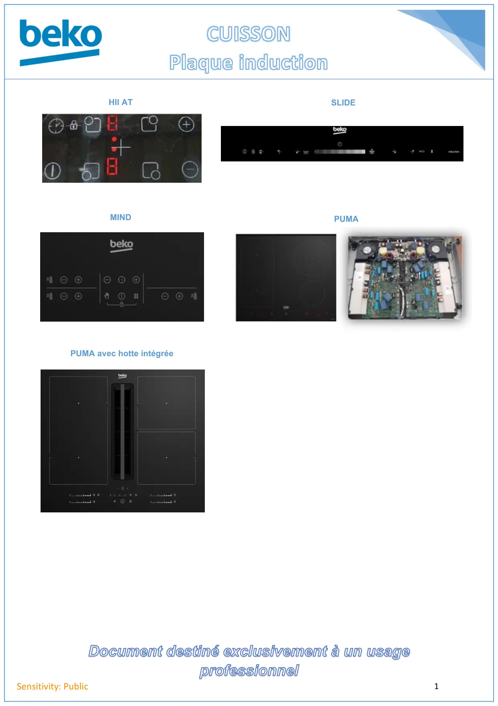

CUISSON page accueil

Document destiné exclusivement à un usageprofessionnel1Sensitivity: PublicHII ATSLIDEMINDPUMA avec hotte intégréePUMA
1 / 1


Gros électroménager
Ressources techniques SAV — Beko · Grundig · Whirlpool · Hotpoint · Indesit.
